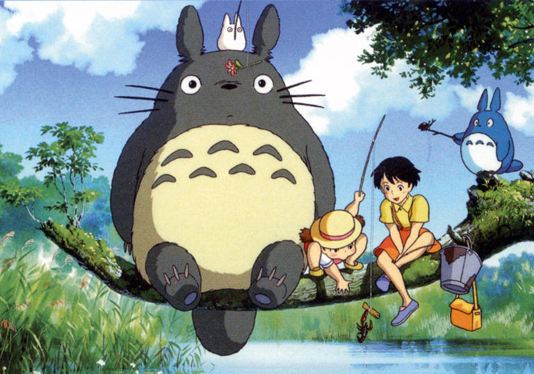
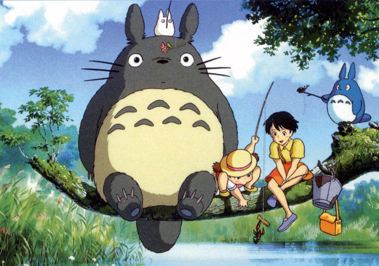
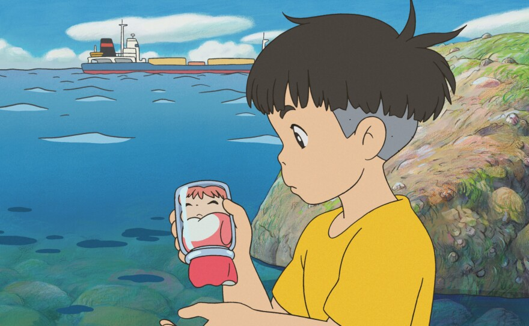

Топ 10 лучших фильмов Studio Ghibli
(по версии РБК)
Навигация |
|||
| Начальная страница | |||
| Режиссеры и их фильмы | |||
| Топ 10 фильмов | |||
| Топ 5 персонажей | |||
| О студии | |||
| Анкета | |||
|
|
| Топ 10 фильмов: |
Название |
Сюжет |
||||||||
1.«Унесенные призраками» (2001)
(Открывается при нажатии) |
Шедевр, подаривший режиссеру мировую известность и премию «Оскар». Главная героиня фильма — десятилетняя девочка Тихиро. Вместе с родителями она переезжает в другой район Японии. Перепутав дорогу, семья оказывается в заброшенном городке. Поначалу место кажется им безлюдным и опасным, но потом мать и отец замечают в ресторане ломящийся от деликатесов стол. Родители решают все съесть и внезапно оказываются посреди мира древних духов и демонов. За обжорство и невоспитанность хозяйка ресторана ведьма Юбаба превращает родителей Тихиро в свиней. Чтобы спасти их, девочке придется пройти через множество испытаний. Она обретет друзей, поможет древним духам и спасет от ведьминских чар несколько невинных душ. |
||||||||
2.«Мой сосед Тоторо» (1988) 

Сацуки и Мэй с лесными духами |
Сюжет повествует о юных сестрах Сацуки и Мэй, которые вместе с отцом переезжают в деревенский дом. Девочки часто убегают в лес, где находят друзей среди древних хранителей природы. Одним из них становится гигантский полукот-полузаяц Тоторо. Он ежедневно сопровождает девочек в различных приключениях, заменяя им больную мать. |
||||||||
3.«Небесный замок Лапута» (1986)
Главные герои в поисках замка |
Дебютный проект студии Ghibli повествует о девочке по имени Шита и подмастерье инженера Пазу, которые отправляются на поиски легендарной Лапуты. Шита обладает таинственным хрустальным кулоном, который способен указать путь к затерянному городу, что делает ее мишенью не только небесных пи1ратов, но и правительственных военных, стремящихся заполучить власть на Лапуте. События картины происходят в альтернативной реальности, а саму идею небесного замка Миядзаки позаимствовал у английского классика Джонатана Свифта, который описал похожий летающий остров в своих «Путешествиях Гулливера». |
||||||||
4.«Ведьмина служба доставки» (1989)Кики успешно справляется с доставкой |
История взросления рассказывает о начинающей ведьме Кики, которая по достижении 13 лет должна провести год среди простых людей, всячески помогая им своим необычным даром. Во время вынужденной стажировки предприимчивая героиня решает, что такой исключительный hard skill, как владение метлой, не должен пропадать зря, и открывает собственную службу доставки. И хотя впереди Кики ждет еще немало трудностей, упорство и вера в себя позволяют ей преодолеть все, а у ее инновационного стартапа не остается иного выхода, кроме как стать успешным. В основу фильма лег одноименный роман японской писательницы Эйко Кадоно. |
||||||||
5.«Шепот сердца» (1995)Главные герое фильма, Сидзуку и Сэйдзи |
Фильм о выборе дела жизни: школьница Сидзуку влюбляется в мальчика, который учится делать скрипки, и мечтает найти занятие, которое захватило бы ее с такой же силой. Все это происходит на фоне живописных пейзажей художника-импрессиониста Наохисы Иноуэ. |
||||||||
6.«Принцесса Мононоке» (1997)Главная героиня фильма, Сан |
По сюжету средневековая Япония становится полем битвы человека и природы. На стороне людей — оружие и современные технологии, а у леса — местные божества и древние духи. Среди защитников природы оказывается девушка Сан, воспитанная богиней-волчицей. Ее главный противник — леди Эбоси, вырубающая заповедный лес ради развития Железного города. Между воюющими женщинами оказывается юный принц Аситака. Он пытается примирить враждующие стороны, но охватившая людей жестокость приносит кровавые жертвы. |
||||||||
7.«Ходячий замок» (2004)Хаул спасает Софи |
Один из наиболее популярных фильмов студии Ghibli, основан на одноименном романе британской писательницы Дианы Уинн Джонс. Ведьма Пустоши превращает юную и робкую Софи в старуху, приревновав ее к прекрасному, но инфантильному волшебнику по имени Хаул. Став старухой, Софи обнаруживает в себе неведомую прежде силу и смелость и помогает Хаулу стать более уверенным в себе. Фильм не обходит стороной и тему войны: действие картины разворачивается на фоне падающих бомб и марширующих солдат. |
||||||||
8.«Рыбка Поньо на утесе» (2008)
|
В центре десятой картины студии — дружба между мальчиком по имени Сосуке и рыбкой Поньо, мечтающей стать человеком, — дочерью морской богини. Здесь студия отказывается от сложной военной проблематики, которая часто затрагивалась в предыдущих проектах, и делает упор на вечные темы — одиночество, ценность семьи и истинное товарищество. | ||||||||
9.«Со склонов Кокурико» (2011)Главные герои фильма, Уми и Шун |
1960-е. Старшеклассники Уми и Шун защищают от сноса школьный клуб и всё сильнее сближаются, ещё не подозревая о связывающей их тайне. Светлая ностальгическая история взросления, первой любви и послевоенной жизни. |
||||||||
10.«Ветер крепчает» (2013)Главный герой фильма, Дзиро |
В основу сценария легла одноименная манга самого художника, изданная в конце 2000-х, и история реального авиаконструктора Дзиро Хорикоси. Молодой Дзиро мечтает о пилотировании самолета, но ему мешает близорукость. Повзрослев, он задумывает сконструировать такой авиационный аппарат, который будет лететь быстрее скорости света. С годами Дзиро становится лучшим авиаконструктором мира, но его творения используют как орудия войны. |
||||||||
Официальный сайт Studio Ghibli |
|||||||||
| <назад | вперед> |